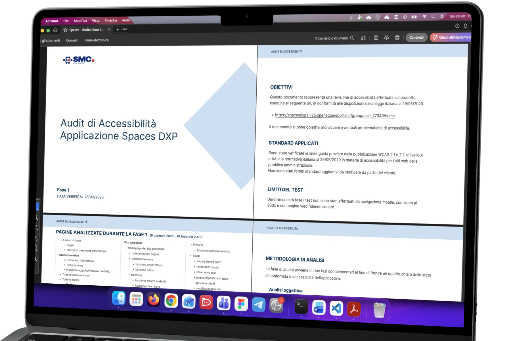

Accessibility Audits
Client: 7 organisations: national payments platform, Ministry of Culture, Costa Crociere, banking group, insurance authority, 2 enterprise intranets
Team: Accessibility team (me as audit author and accessibility specialist, and senior accessibility auditor), working with client PMs and developers on confirmation rounds
Scope: WCAG 2.1/2.2 AA, EN 301 549 and AgID audits: objective and heuristic analysis, screen-reader testing (NVDA, JAWS, VoiceOver, TalkBack), PDF accessibility, re-tests with developers, accessibility statements
Timeline: December 2024 - present
Outcome: 12+ audit deliverables and 1,500+ findings documented with 4-level priority, up to 3 confirmation rounds per product; bilingual accessibility statement for a cruise line's onboard app; testing an AI auditor (July 2026).

Context
Since December 2024 accessibility has been half of my job at SMC. Italian public administrations and the companies that serve them must comply with Law 4/2004, WCAG 2.1 AA and EN 301 549, and since June 2025 the European Accessibility Act extends the same duty to banking, e-commerce and transport. Our clients needed a reliable answer to one question: where does our product fail real users, and what do we fix first?
I have audited 7 organisations so far: a national payments platform, the Ministry of Culture's procedures portal, a cruise line's onboard web app, a banking group, an insurance authority and two enterprise intranets.
What I do in an audit
- Scope the flows: with the client I list the user journeys to test, from login to the last confirmation screen, front office and back office. On the largest intranet this meant 189 flows.
- Objective analysis: I check every applicable WCAG 2.1/2.2 success criterion at level A and AA, plus the EN 301 549 clauses for PDF documents, using axe, WAVE, Siteimprove and ARIA DevTools to speed up the mechanical part.
- Subjective analysis: I walk the same flows the way users do: NVDA and JAWS on Windows, VoiceOver on Mac and iOS, TalkBack on Android, keyboard only, 200% zoom and 320 px reflow, colour-blindness simulation.
- Report and prioritise: every finding gets an ID, the violated criterion, the element, a screenshot, a fix suggestion and one of four priorities: blocking, high, medium, low. The client receives a spreadsheet for developers and a short PDF report for management.
- Confirm the fixes: when the team ships, I re-test each finding and mark it resolved, rejected or still open. Some products went through three confirmation rounds.
Three examples
Enterprise intranet, 607 findings in one release. The client's collaboration platform was about to be sold to public administrations. In two phases (January to April 2025) my colleague and I covered 189 flows and logged 607 findings, 53 of them blocking: keyboard traps inside cards, focus jumping back to the top of the page, timers with no way to extend them. The developers received the findings grouped by module so each squad could work on its own list.
National payments platform, from onboarding to APIs. Between September 2025 and February 2026 I audited three products of the same platform: the notification service, the reserved area (49 findings on onboarding, 85 on the dashboard) and the interoperability console (104 findings across catalogue, subscription, provision, client and delegation management). Recurring problems were grouped, so 9 occurrences of the same contrast issue count as one finding with one fix. In the confirmation round on the notification service, 60 of the 62 re-tested findings were resolved.
Ministry portal, 16 procedures and 3 confirmation rounds. The citizen and back-office portal for cultural heritage procedures was tested procedure by procedure, from "export permit for artworks" to "expropriation". Each procedure got its own report with errors per screen and the list of failed criteria. I also audited the generated PDF forms against EN 301 549 chapter 10, because a form a screen-reader user cannot read is a procedure they cannot complete.
Beyond the report
- Accessibility statement: for Costa Crociere's onboard Mymoments app I wrote the legal accessibility statement in Italian and English, listing each non-compliant criterion in plain language.
- Design guidelines: I turned the recurring findings into "Accessibility in Figma" guidelines for our design team: contrast pages in every UI kit, do and don't cards, typography rules for line height and spacing.
- Testing an AI auditor: in July 2026 I was asked to pilot an experimental AI agent that drives a real browser, simulates users with different disabilities (screen reader, keyboard only, low vision, colour blindness, tremor, dyslexia, photosensitivity) and produces a WCAG 2.2 report. I ran it on a ministry form I had just audited by hand and compared the two. On the common perimeter we found 25 distinct problems: 1 caught by both, 17 only by me (contrast on icons and input borders, modals, back-office states), 7 only by the tool, including 2 real violations on hidden anti-bot fields my screen-reader pass had missed. Neither audit alone covered the service; each one would have lost about two thirds of the issues. My recommendation to the team: use the agent as the first pass and for regression checks, keep the human for multi-step flows, modals and judgement calls, and design the reports so the two sets of findings merge into one list.
Something new I learned
- Developers fix what they understand: A screenshot, the exact element and a suggested fix get resolved; a criterion number alone does not.
- The best audit is the one you do not need: Most findings came from components that were never designed with focus, labels and contrast in mind, which is why I now bring the checklist into Figma before anything ships